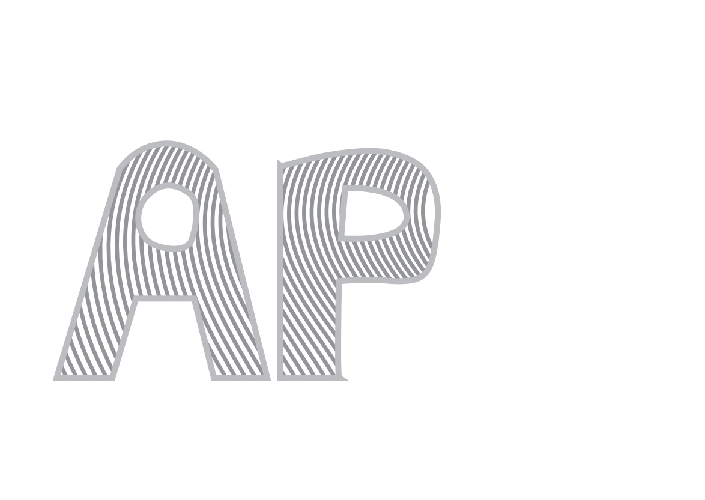
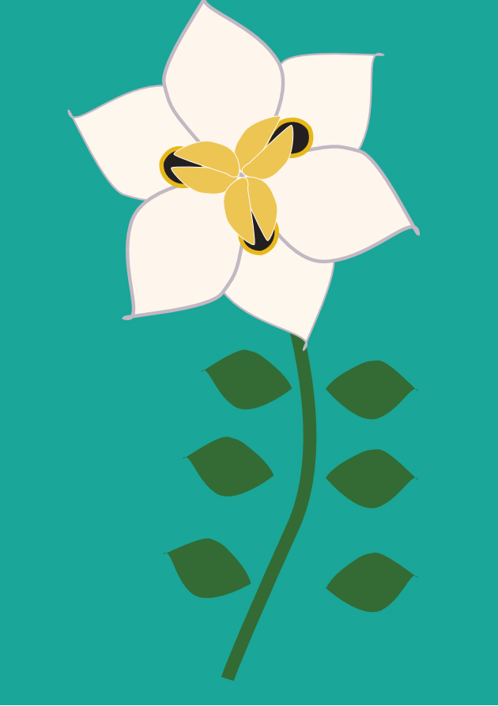
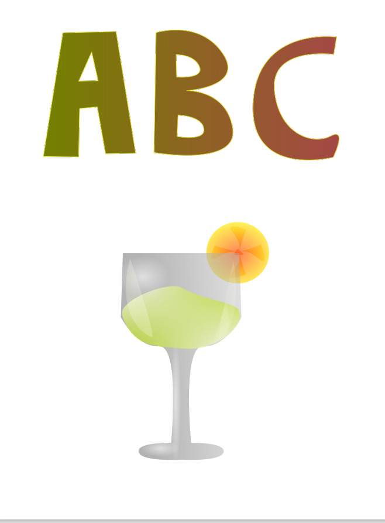
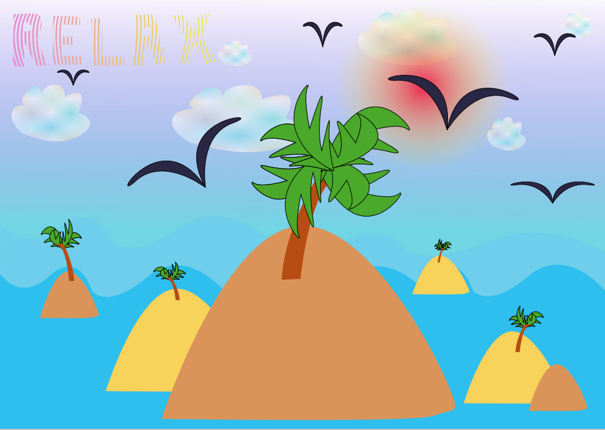

Vježba 1
U prvoj vježbi dizajnirali smo ručno crtani vlastiti font. Koristili smo se programima Fontographer ili FontForge.
.jpg)
Vježba 2
U drugoj vježbi smo koristili font iz prve i u programu Adobe Illustrator napravili masku koristeći Bezierove krivulje.

Vježba 3
U ovoj smo vježbi U Illustratoru crtali krivulje prema danom predlošku, podešavali smo im prozirnost, boju i debljinu te smo se upoznali s Rotate toolom.

Vježba 4
U četvrtoj vježbi smo naučili kako napraviti objekt trodimenzionalnim uz pomoć alata Gradient i Mesh Gradient.

Projektni zadatak 1
U prvom projektnom zadatku trebali smo spojiti tehnike i alate koje smo naučili u prethodnim vježbama u jedan rad.

Vježba 5
U petoj vježbi počeli smo raditi u Photoshopu te se upoznavati sa sučeljem rada i osnovnim tehnikama retuširanja.
 Parunov A..jpg)
Vježba 6
U šestoj smo se vježbi bavili koloriranjem selekcije neke fotografije, upoznali smo se s fukcijama Channels panela i radili s istima.
.jpg)
Vježba 7
U sedmoj vježbi smo se bavili fotomontažom, selekcijom, maskama i u konačnici korekcijom boja.

Projektni zadatak 2
U drugom projektnom zadatku trebali smo spojiti sve tehnike i alate koje smo naučili u prethodnim vježbama u jedan rad.

Vježba 8
U osmoj vježbi smo se upoznavali s osnovama rada u Premieru i Oliveu uz pomoć zadatka izrade Gifa. Također smo trebali i Photoshop u ovoj vježbi za izradu prozirnog dijela framea.
.gif)
Vježba 9
U devetoj vježbi smo se bavili rezanjem video materijala, njihovim prijelazima i efektima te smo učili uređivati statičan i pomičan tekst.